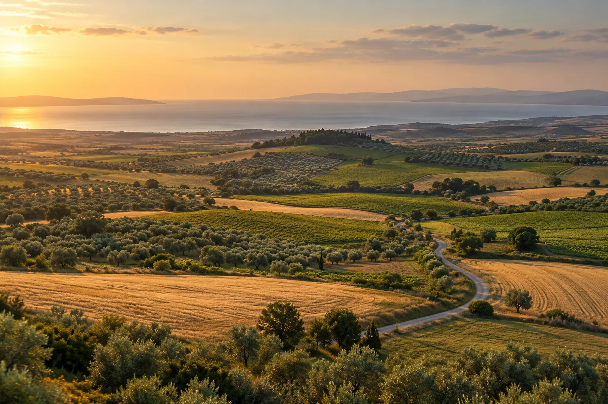

Tapuda Neye Bakılır?
Tapu niteliği, hisse durumu ve taşınmazın hukuki özelliklerini değerlendirmenin ilk adımları.

TRAKYA’DAN BAŞLAYAN BİR BAKIŞ
Trakya’da arsa ve arazi araştırmasını daha anlaşılır hale getiriyoruz. Bölgeyi tanıyın, seçenekleri karşılaştırın, bilgiyle karar verin.
01Konuma yakından bakınBölge, çevre ve erişim bilgileri
02Bilgiyi birlikte değerlendirinKaynak, kontrol tarihi ve açık eksikler
03Seçeneklerinizi karşılaştırınFiyat, alan ve tapu türü yan yana
ARSA & ARAZİ PORTFÖYLERİ
Görseller tanıtım amaçlıdır; güncel fiyat ve parsel bilgileri için bizimle iletişime geçin.
SİZİN TOPRAĞINIZ, YENİ BİR HİKÂYE
Satmak istediğiniz arsa veya arazi için bize ulaşın.
Konumu ve bilgileri birlikte değerlendirelim.
YAN YANA İNCELE
Koordinat gir, haritada konumu incele, uydu görünümüne veya resmî parsel sorgusuna geç.
Haritada gösterilen başlangıç noktası yalnızca genel konumdur; satılık bir taşınmazın koordinatı değildir.
Önemli: Gömülü harita OpenStreetMap'tir; Google uydu görünümü ayrı sekmede açılır. TKGM Parsel Sorgu bağlantısı resmî sistemi yeni sekmede açar; kadastro verileri henüz Toprak Ehli sitesine aktarılmıyor. Bu alanlar için internet bağlantısı gerekir.
Konum aracı arazi mülkiyetini, kesin parsel sınırını veya imar durumunu doğrulamaz. Resmî kontroller ilgili kurumlarda yapılır. Uydu fotoğrafları canlı görüntü değildir.
Güncel portföyler bölgelere göre listelenir. Ada/parsel ve güncel satış koşulları resmî kaynaklardan ve portföy yöneticisinden doğrulanmalıdır.
Portföy bölgeleri yükleniyor…
Arazi yatırımını değerlendirirken yalnızca fiyatına değil; tapu niteliğine, yola erişimine, imar bilgilerine ve yatırım süresine birlikte bakmak gerekir.
Arazi araştırmasında işinize yarayacak üç temel konu.
Tapu niteliği, hisse durumu ve taşınmazın hukuki özelliklerini değerlendirmenin ilk adımları.
Yetkili kurumlardan doğrulama yapmanın ve güncel imar durumunu anlamanın önemi.
Ulaşım, çevresel gelişmeler, arsa niteliği ve zaman ufkunu birlikte değerlendirme.
ÇALIŞMA İLKEMİZ
01 / Kaynağı görünür bilgiPortföy bilgileri kaynakları ve doğrulama durumlarıyla sunulur.
02 / Eksiklere açık yaklaşımSağlanmayan bilgiler açıkça işaretlenir. Tahminle doldurulmaz.
03 / Bilinçli değerlendirmeGetiri garantisi verilmez. İçerikler yatırım tavsiyesi değildir.
MERAK ETTİKLERİNİZ
Her kaydın detayında fiyat, alan, tapu türü ve sağlanan diğer bilgiler bulunur. Kaynak ve kontrol tarihini birlikte okuyun; eksik alanlar ayrıca işaretlenir.
Kartlardaki Karşılaştır seçeneğiyle en fazla üç kayıt seçebilirsiniz. Filtrelerinizi değiştirseniz de seçimleriniz korunur. Sayfayı yenilediğinizde seçimler sıfırlanır.
İlan detayındaki WhatsApp veya e-posta bağlantısını kullanabilirsiniz. Kayıt adı mesajınıza eklenir; mesajı inceleyip kendiniz gönderirsiniz. Telefonla da bize ulaşabilirsiniz.
Konumu keşfedelim, seçenekleri birlikte değerlendirelim.
BİRLİKTE KONUŞALIM
Aradığınız bölgeyi ve beklentilerinizi anlatın.
İlk adımı birlikte atalım.
Bu site üzerinden form kaydı alınmaz. WhatsApp veya e-posta bağlantısını seçtiğinizde ilgili hizmeti kullanırsınız.